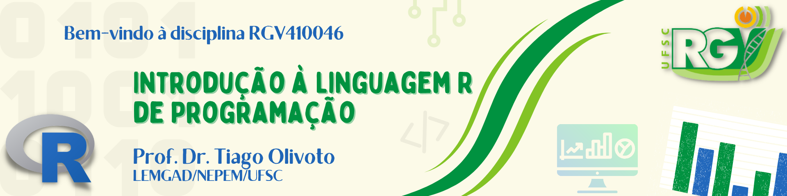

Orientações

Introdução
Bem-vindos ao desafio final da disciplina de Introdução ao R! O objetivo deste projeto é aplicar as habilidades de manipulação, transformação e visualização de dados que aprendemos ao longo do curso em um problema real da área de melhoramento de plantas.
Contexto do Problema
No melhoramento genético da linhaça (linho), pesquisadores avaliam diferentes genótipos (variedades) para selecionar aqueles com as melhores características agronômicas, como produtividade e qualidade dos grãos. Para isso, coletam dados de diversas fontes:
- Avaliações em laboratório/campo: Medidas diretas nas plantas, como altura e número de ramificações.
- Análise de imagens: Fotografias de amostras de cápsulas e grãos são processadas para extrair informações como número, tamanho e forma.
- Medidas de massa: Pesagem de amostras de grãos para estimar o peso médio.
O nosso desafio é atuar como um cientista de dados e integrar todas essas informações para criar um único conjunto de dados consolidado. Este dataset final nos permitirá comparar os genótipos de forma eficiente e extrair insights valiosos.
O Desafio
Você deverá carregar, limpar, transformar e combinar quatro conjuntos de dados distintos. O objetivo final é gerar uma tabela única onde cada linha representa a média das características de um genótipo, pronta para análises estatísticas e visualizações.
Descrição dos Dados
Os quatro arquivos necessários para este desafio são:
laboratorio.xlsx: Contém dados fenotípicos coletados diretamente das plantas no laboratório.img: Identificador único de cada planta.TIPO: O tipo de linhaça (DOURADA ou MARROM).GEN: O genótipo (variedade) da planta.AP,AC,NR,MC,MG: Variáveis agronômicas da planta (altura, etc.).
capsulas.xlsx: Resultado do processamento de imagens para contagem de cápsulas.img: Identificador da imagem, que contém o número doINDIVIDUO.- Cada linha representa uma cápsula detectada na imagem.
graos.csv: Resultado do processamento de imagens para análise dos grãos.img: Identificador da imagem, que contém o número doINDIVIDUO.length,width: Comprimento e largura de cada grão.- Cada linha representa um grão detectado na imagem.
mmg.xlsx: Contém a massa de mil grãos para cada genótipo.GEN: O genótipo.mmg: A massa de mil grãos, uma importante medida de produtividade.
Objetivos do Desafio
Seu trabalho é criar um script em R, dentro deste documento Quarto, que realize as seguintes tarefas:
1. Preparação do Ambiente
- Carregue os pacotes necessários para a análise.
- Importe os quatro arquivos de dados (
laboratorio.xlsx,capsulas.xlsx,graos.csv,mmg.xlsx) para o seu ambiente R.
2. Análise e Consolidação por Planta
O objetivo desta etapa é criar um único data frame que contenha todas as informações para cada planta (img).
- Para o arquivo
graos: Calcule o número total de grãos (NG), o comprimento médio (CG) e a largura média (LG) para cada planta. - Para o arquivo
capsulas: Calcule o número total de cápsulas (NC) para cada planta. - Extração do ID: Note que nos arquivos de imagem, a identificação da planta é um número no início da coluna
img(ex:"100_Cápsulas_..."). Você precisará extrair este número para poder vincular os dados aos do arquivolaboratorio. - Unificação: Junte as estatísticas calculadas (NG, CG, LG, NC) ao data frame principal
laboratorio. O resultado deve ser uma tabela onde cada linha corresponde a uma planta (img) com todas as suas variáveis.
3. Análise e Consolidação por Genótipo
Com os dados consolidados por planta, o próximo passo é agregar as informações para obter um resumo por genótipo.
- Agregação: Calcule a média de todas as variáveis numéricas (altura da planta, número de grãos, etc.) para cada genótipo (
GEN). - Junção Final: Adicione a informação de massa de mil grãos (
mmg) do arquivommgao seu data frame de genótipos. - Resultado Final: O produto desta etapa deve ser um data frame limpo e organizado, onde cada linha representa um genótipo e as colunas representam as médias de suas características.
4. Exploração e Visualização
Agora que você tem um dataset final consolidado por genótipo, crie pelo menos duas visualizações diferentes para explorar os dados. O objetivo é investigar possíveis relações entre as variáveis e comparar o desempenho dos genótipos.
- Perguntas que você deve responder:
- Como a altura da planta se relaciona com o número de cápsulas?
- Há indícios de que genótipos do tipo “DOURADA” e “MARROM” diferem em relação à altura de planta?
- Quais os top 5 genótipos para produção de grãos (MG) de cada tipo de linhaça?
- Calcule o diferencial de seleção, ou seja, a diferença da média geral e a média dos top 5 genótipos, para cada tipo de linhaça, representando os valores em um gráfico de barras
Conclusão
Nesta seção, escreva um breve parágrafo resumindo suas principais descobertas com base nas visualizações que você criou.
O que entregar?
- Este arquivo
.qmdcom todos os blocos de código preenchidos e a sua conclusão. - O arquivo HTML renderizado a partir do seu
.qmd, que mostrará seu código, os resultados e os gráficos.